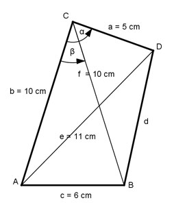

Aufgabe 180 Wie groß ist die Seite d?

Im Dreieck ABC: Fall SSS: c2 = b2 + f2 - 2 * b * f * cos β |+2*b*f*cos β c2 + 2 * b * f * cos β = b2 + f2 |-c2 2 * b * f * cos β = b2 + f2 -c2 |:2 * b * f b2 + f2 - c2 cos β = -------------- = 2 * b * f 102 cm2 + 102 cm2 - 62 cm2 = ---------------------------- = 2 * 10 cm * 10 cm = 0,82 --> β = 34,9° Im Dreieck ADC: Fall SSS: e2 = a2 + b2 - 2 * a * b * cos α |+2*a*b*cos α e2 + 2 * a * b * cos α = a2 + b2 |-e2 2 * a * b * cos α = a2 + b2 - e2 |:2 * a * b a2 + b2 - e2 cos α = -------------- = 2 * a * b 52 cm2 + 102 cm2 - 112 cm2 = ---------------------------- = 2 * 5 cm * 10 cm = 0,04 --> α = 87,7° Im Dreieck BCD: Fall SWS: d2 = a2 + f2 - 2 * a * f * cos (α – β) d2 = 52 cm2 + 102 cm2 - - 2 * 5 cm * 10 cm * cos (87,7° - 34,9°) d2 = 52 cm2 + 10 cm2 - 2*5 cm * 10 cm * cos 52,8° d2 = 52 cm2 + 10 cm2 - 2*5 cm * 10 cm * 0,6046 d2 = 64,52 cm2 |√ d = 8 cm